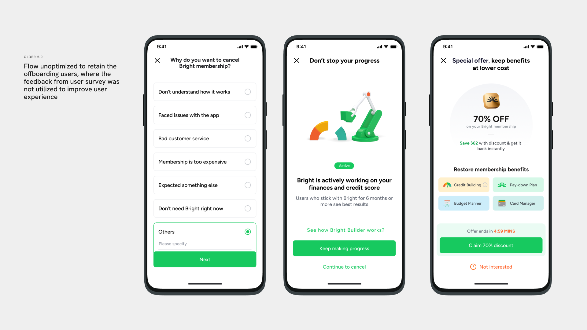
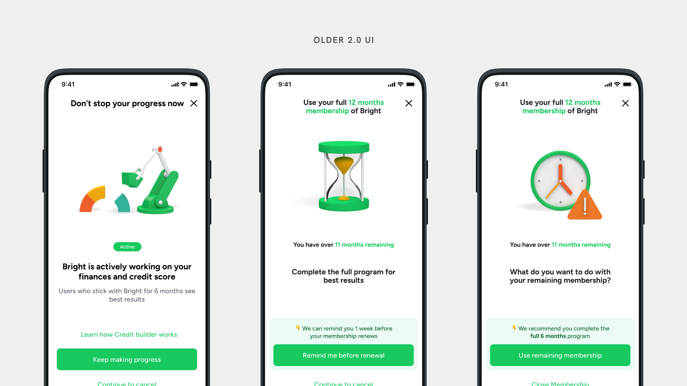
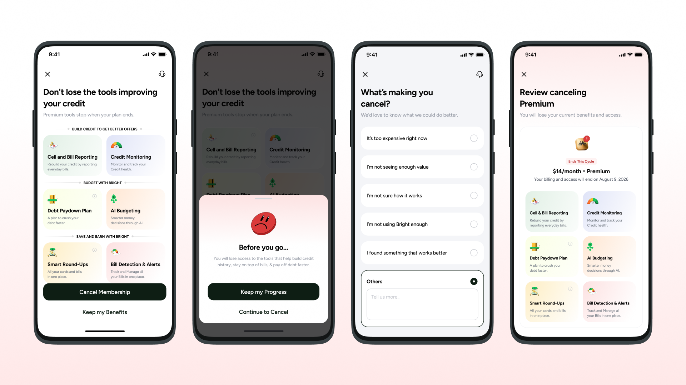
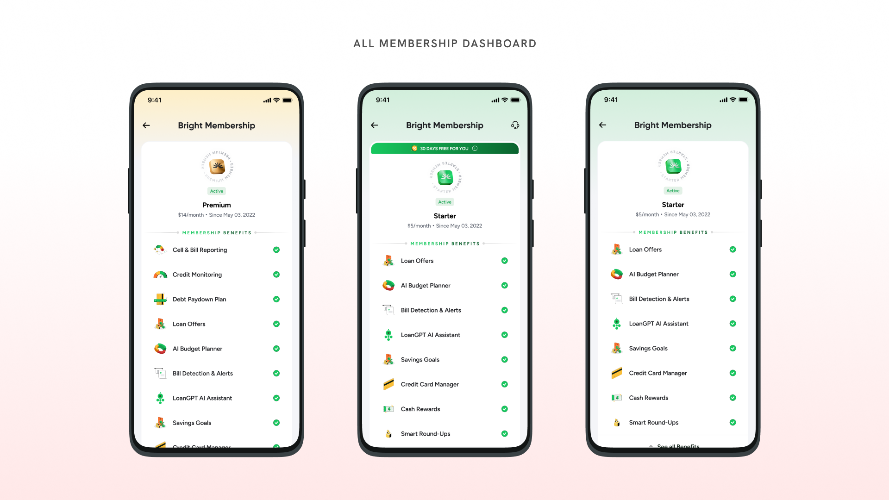
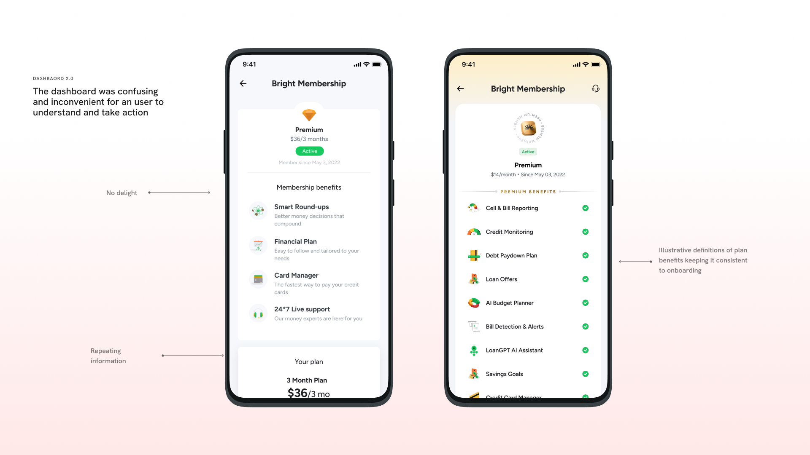
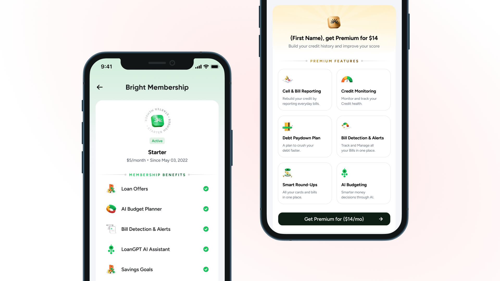
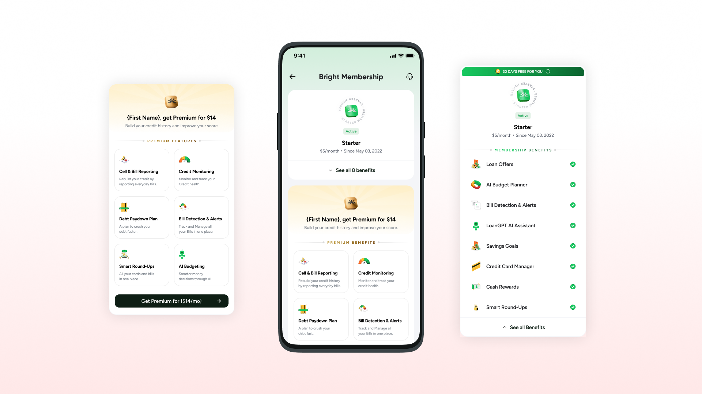
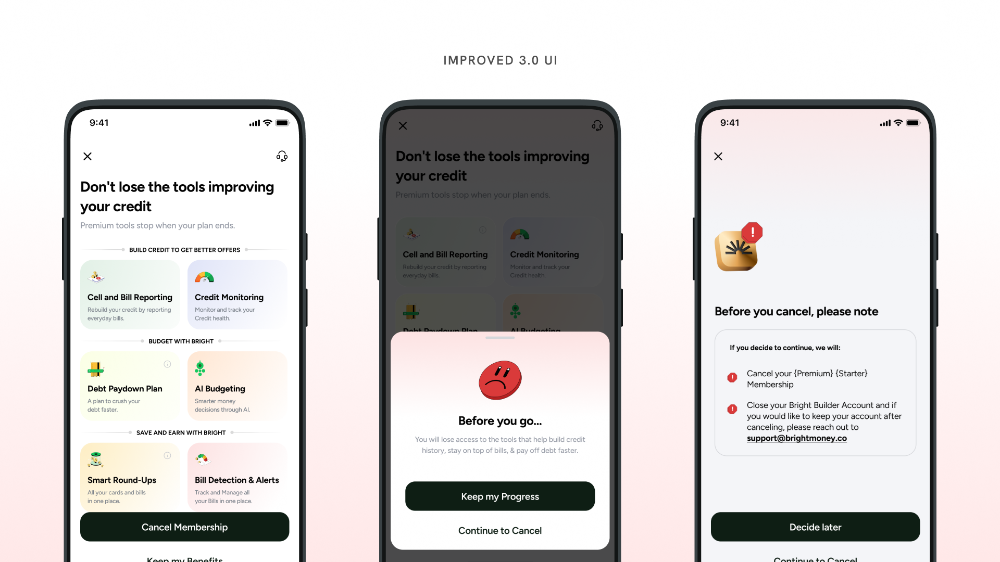

Bright charges a $5/month Starter membership. Below that, users on the Basic tier — free — can still hold money in a Bright Savings Account. The product had been charging those users an $11 admin fee for the privilege. No explicit consent. No clear communication. Just a charge that showed up.
The bank partner flagged it. Legal flagged it. The label: UDAAP — unfair, deceptive, or abusive acts or practices. Engineering's response was to build a proper Starter tier and shut the admin fee down. ~9,800 users needed migrating. The cancel flow needed redesigning to handle Premium users downgrading cleanly.
I came in as the design POC. The compliance fix was settled. The UX wasn't.
User research surfaced the signal clearly: people weren't just leaving. They were leaving and calling it fraud. Cancel attempts were ending in unauthorized charge reports — not because the charge was new, but because users didn't understand what they'd signed up for, couldn't find a way to talk to someone, and the flow gave them no exit that felt legitimate.
Cancel attempts were followed by unauthorized charge reports — users couldn't tell the difference between a cancelled charge and an unexplained one.
The cancel flow offered a 70% discount with no path to customer support. Users who didn't want the discount had nowhere to go.
~9,800 Basic users were on an $11 admin fee with no record of consenting to it. The first clear communication many received was a migration notice.
Settings screens had no coherent state model. What a cancelled user saw, what a grace-period user saw, what a migrated user saw — none of it was designed as a system.
The old flow was designed to retain at any cost. It was optimized to frustrate people out of cancelling rather than give them a reason to stay. That's the problem I was asked to fix.

The original cancel flow was built around a single idea: make leaving hard enough that people give up. The discount appeared early, the decline path was visually deprioritized, and there was no acknowledgement that the user might have a legitimate reason to cancel. No customer support touchpoint. No honest confirmation of what Basic actually offers.
I argued against that structure. Not because retention doesn't matter — it does, and the A/B test was designed to measure it — but because a flow that works by confusion stops working the moment users learn to distrust it. The unauthorized charge reports were the evidence that it had already stopped working.
Bury the cancel path. Show the discount before confirming intent. Offer Basic only after the discount is declined. No CS access from within the flow.
State the offer clearly. Show what Basic actually includes. Add a direct CS path for users who have a complaint. Confirm the downgrade outcome in plain language.

The A/B test structure gave us four arms to validate this. Arm A kept the existing friction-first approach as a control. Arm B showed the $5 Starter offer explicitly before the discount. Arm C defaulted users toward Starter and required an active opt-out. Arm D handled Starter cancellers separately — no offer, just a clean acknowledgement and a move to Basic.

The cancel flow was the visible work. The settings screen was the larger one.
Every combination of tier, billing status, migration state, and grace period had its own variant. Premium active. Premium cancelled within grace. Starter active. Starter on 30-day free grace. Basic after downgrade. Basic on admin-fee migration. Admin-fee user mid-notice period. Each one had different available actions, different copy, different CTAs.
None of it had been designed as a system. Screens had been added sprint by sprint as edge cases emerged. The result was a settings section that looked different depending on how you got there, with copy that described what was happening in engineering terms rather than user terms.
I mapped every state, identified what each user needed to know and do at that moment, and built the screens as a coherent set. The hierarchy stayed consistent: what your plan is, what it costs, what changes next, what you can do about it. In that order, every time.




After the initial design work, I pushed further. The PRD covered the happy path and the core arms. It didn't fully account for every permutation — what a user sees if they cancel during the grace period, what happens at the overlap between the migration notice window and an existing billing cycle, what the reactivation screen shows if a user comes back after the admin-fee migration ran.
I took those gaps to the PM and built the missing states before engineering hit them. Not as a redesign pass — as a push from the design side to complete the spec. The intent was to avoid engineering decisions becoming design decisions by default, which is what happens when a screen state has no design file attached to it.
The project is in review, pending launch. The A/B test hasn't run. There are no save rate numbers to report yet.
What exists: a complete design system for every membership state, a cancel flow built around communication rather than obstruction, and a spec that covers edge cases the original PRD didn't reach. Engineering has a design file attached to every screen state. PM has visibility into what each transition looks like for the user before it ships.
The compliance driver was the $11 admin fee. The design problem was everything that surrounded it — a cancel flow that trusted friction more than honesty, and a settings section that was never designed as a whole. Those are the things I worked on.

The pressure on a cancel flow is always to save the user. Every stakeholder in the room wants the save rate number. What I had to argue is that the save rate is only meaningful if the users who stay actually understand what they stayed for.
A flow that keeps people by making leaving confusing doesn't build retention. It builds a backlog of unauthorized charge reports. The data said so.
The more interesting design problem wasn't the cancel flow. It was the settings screens — mapping 13 states and making them feel like one product. That's less visible work. It doesn't have a metric attached to it. But it's the work that determines whether the product makes sense to someone who's been migrated, cancelled, reactivated, and migrated again. That person exists. They deserve a screen that explains what's happening to them.
Shreyo Debnath · Product Designer